Chiara e Luca
Matematica, scuola, amicizia e vita quotidiana. Le tavole sono organizzate per livello e per argomento; i numeri 001–044 restano semplicemente i codici editoriali delle storie.
Percorsi per livello
Ogni livello raccoglie le tavole per area matematica. Il livello è una guida di navigazione, non una classe scolastica rigida.
Livello 1Contenuti disponibili
Numeri e calcolo
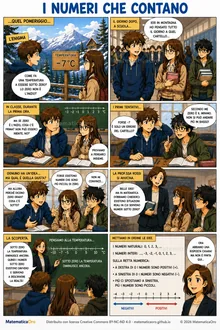
I numeri che contano
Numeri interi
Livello 1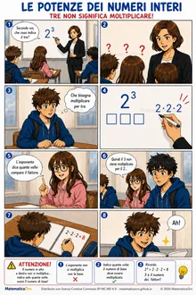
Le potenze dei numeri interi — Tre non significa moltiplicare!
Potenze
Livello 1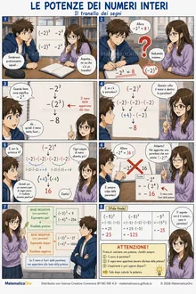
Le potenze dei numeri interi — Il tranello dei segni
Potenze e segni
Livello 1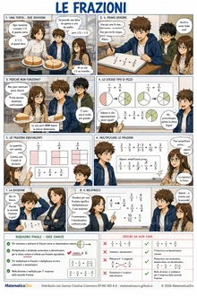
Le frazioni
Frazioni
Livello 1Algebra
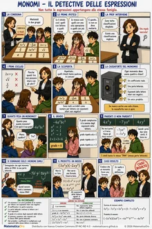
Monomi — Il detective delle espressioni
Monomi
Livello 1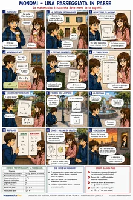
Monomi — Una passeggiata in paese
Monomi
Livello 1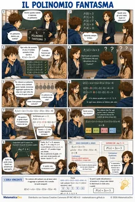
Il polinomio fantasma
Polinomi
Livello 1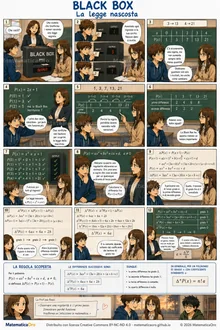
Black Box — La legge nascosta
Polinomi e differenze finite
Livello 1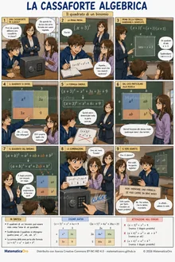
La cassaforte algebrica — Il quadrato di un binomio
Quadrato di un binomio
Livello 1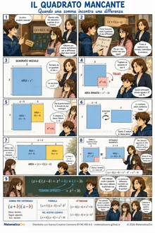
Il quadrato mancante
Somma per differenza
Livello 1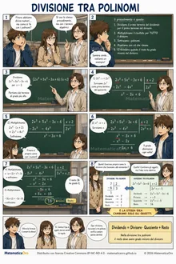
Divisione tra polinomi
Divisione tra polinomi
Livello 1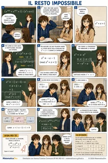
Il resto impossibile
Resto nella divisione tra polinomi
Livello 1Equazioni e disequazioni
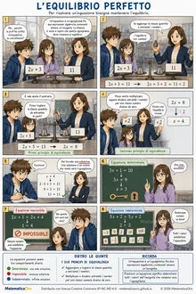
L'equilibrio perfetto
Equazioni lineari
Livello 1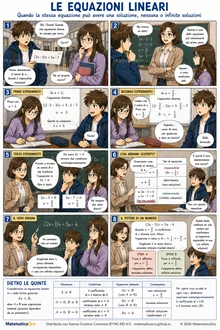
Le equazioni lineari
Equazioni lineari parametriche
Livello 1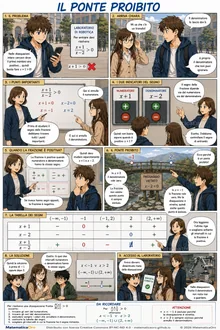
Il ponte proibito
Disequazioni fratte
Livello 1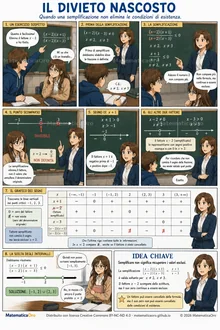
Il divieto nascosto
Disequazioni fratte e C.E.
Livello 1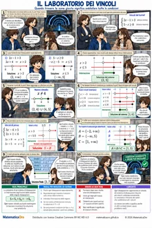
Il laboratorio dei vincoli
Sistemi di disequazioni
Livello 1Geometria
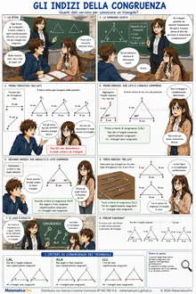
Gli indizi della congruenza
Criteri di congruenza dei triangoli
Livello 1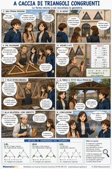
A caccia di triangoli congruenti
Congruenza dei triangoli
Livello 1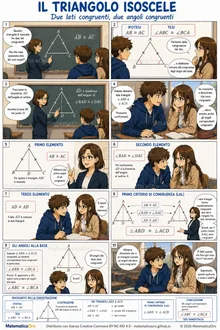
Il triangolo isoscele
Triangolo isoscele e dimostrazione
Livello 1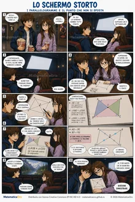
Lo schermo storto
Parallelogrammi e diagonali
Livello 1–2Livello 2Contenuti disponibili
Numeri e calcolo — Radicali
Equazioni e disequazioni
Geometria
Geometria analitica
Funzioni e modelli
Probabilità e statistica
Livello 3Contenuti disponibili
Livello 4In preparazione
Esponenziali e logaritmi
Goniometria e trigonometria
Livello 5Contenuti disponibili
Storie di Chiara e Luca
Alcune tavole hanno una funzione soprattutto narrativa e accompagnano la crescita dei personaggi senza introdurre necessariamente un nuovo contenuto matematico.
041 · Quello che non si misura